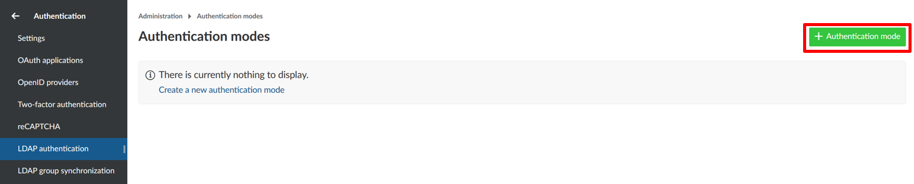
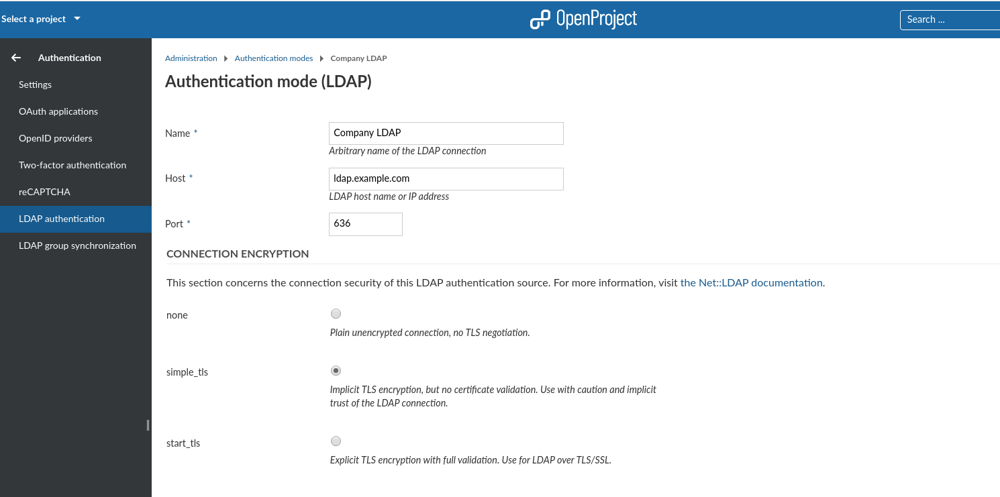
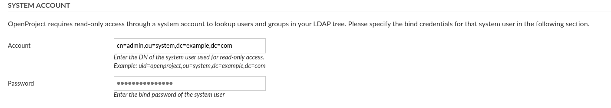
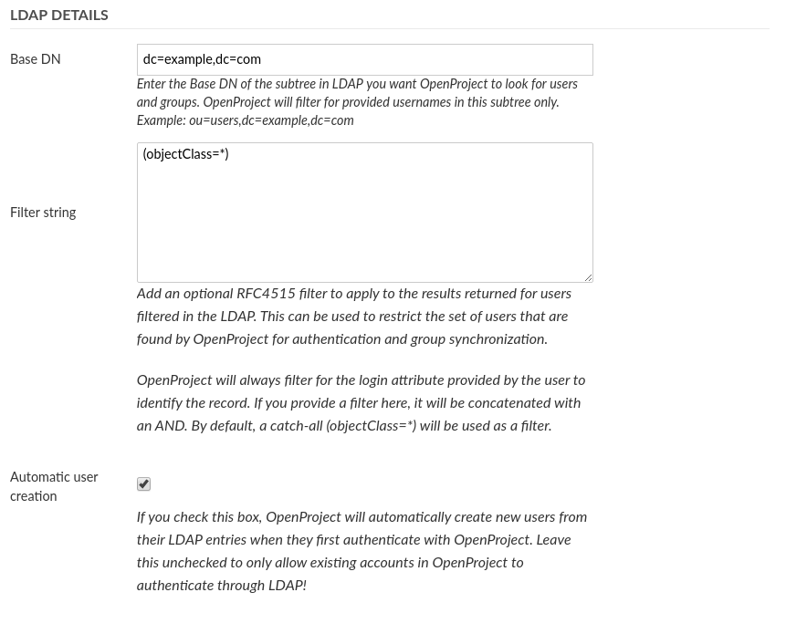
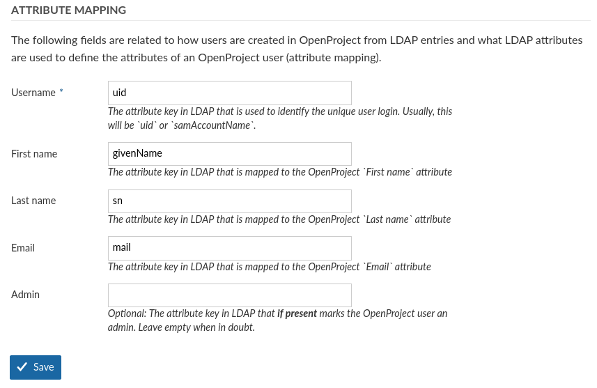
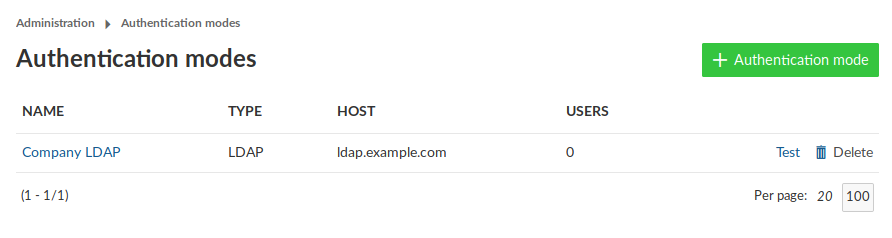

To see the list of all available LDAP (Lightweight Directory Access Protocol) authentications navigate to - > Administration and select -> Authentication -> LDAP Authentication from the menu on the left. You will see the list of all available authentications already created.
To create a new LDAP authentication click on the respective icon.

You will then be able to specify the LDAP configuration. This can be any directory service compatible with the LDAPv3 standard, such as Microsoft Active Directory or openLDAP. The configuration depends on the specific database/applications, through which the authentication with OpenProject is intended.
The following screenshots contain an exemplary configuration for a new LDAP authentication mode. In the following, we will go through all available options.

In the upper section, you have to specify the connection details of your LDAP server as well as the connection encryption to use.
none . No TLS/SSL connection will be established, your connection will be unsecuresimple_tls , this is an older SSL encryption pattern that uses SSL certificates, but DOES NOT VERIFY THEM. Implicit trust in the connection will be placed, but the connection will be encrypted. Some older LDAP servers only support this optionstart_tls will use TLS to encrypt the connection after connecting to the LDAP server on the unencrypted PORT (389 by default).Allowing untrusted certificates for LDAP connections
If you use start_tls , certificate details and host names will be verified on connections as recommended for security. In case you use a custom untrusted certificate authority (CA) that your LDAP is connecting to, you can place this CA in your system’s trusted CA store if possible. For some distributions, you will need to specify this CA manually to OpenProject.
You can do this by using the advanced configuration function of OpenProject. You can define the CA path by setting the following ENV variable:
OPENPROJECT_LDAP__TLS__OPTIONS_CA__FILE="/path/to/the/root-ca.crt"
or by extending your production configuration of config/configuration.yml with the following segment:
production:
# .. other settings ..
# ldap_tls_options:
# ca_file: "/path/to/the/root-ca.crt"
You can set other TLS options for the LDAP auth source connection. They are passed as the tls_options to the Net::LDAP gem and ultimately end up in the SSLContext setting of Ruby. You can define the TLS version and other advanced options in case your connections needs it. Most users will not need to change this however.
See the following resources for more information:

Next, you will need to enter a system user that has READ access to the users for identification and synchronization purposes. Note that most operations to the LDAP during authentication will not be using these credentials, but the user-provided credentials in the login form in order to perform a regular user bind to the LDAP.

Next you can define what sections OpenProject will look for in the LDAP and also if users should be created automatically in OpenProject when they are accessing it. Let’s look at the available options:

The attribute mapping is used to identify attributes of OpenProject with attributes of the LDAP directory. At least the login attribute is required to create DNs from the login credentials.
login-attribute=value,. Most often, this will be uid.Lastly, click on Create to save the LDAP authentication mode. You will be redirected to the index page with the created authentication mode. Click the test button to create a test connection using the system user’s bind credentials.

With the OpenProject Enterprise Edition it is possible to synchronize LDAP and OpenProject groups.
OpenProject supports multiple LDAP connections to source users from. The user’s authentication source is remembered the first time it is created (but can be switched in the administration backend). This ensures that the correct connection / LDAP source will be used for the user.
Duplicates in the unique attributes (login, email) are not allowed and a second user with the same attributes will not be able to login. Please ensure that amongst all LDAP connections, a unique attribute is used that does not result in conflicting logins.